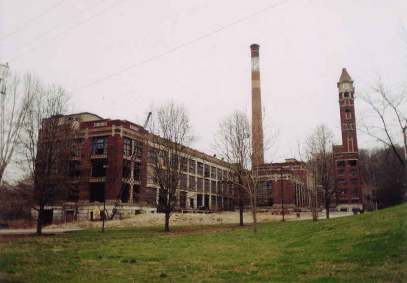
A mile or so past Paramount's King's Island is the little town of Kings Mills, Ohio. For years the one major industry here was the massive munitions manufacturing complex which operated on both sides of the Little Miami River just outside town. Constructed in the 1860s, it made bullets and cannonballs for the Union Army during the Civil War, and was a target for Morgan's Raiders during their 1863 trip through Ohio. Legend has it that they took a wrong turn and missed Kings Mills entirely.
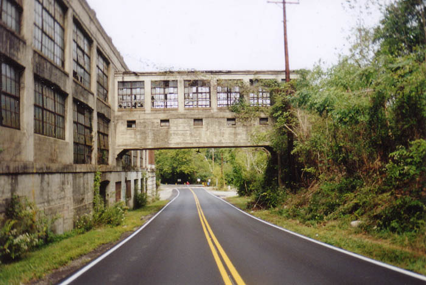
Bullets and explosives were made here for more than a century. In the early days before OSHA and labor unions, an industry like munitions was subject to accidents, including explosions and fires, as well as machinery and testing that would maim or deafen employees. The Peters plant had a number of fatalities over the years.
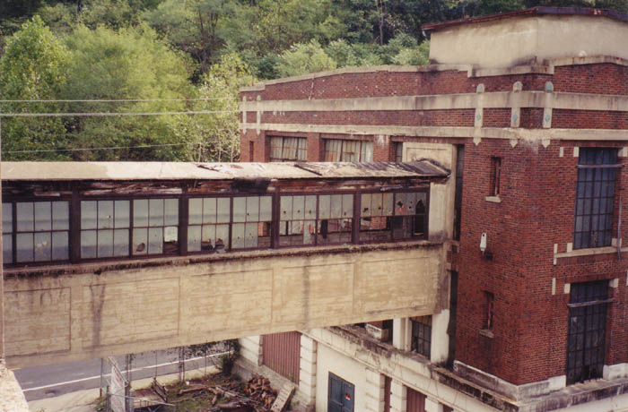
In 1944 munitions work stopped at the Peters Cartridge Company. Remington purchased the building and put it back to work for a while. Later, Columbia Records pressed and stored vinyl discs inside. By the end of the 1950s, however, the Peters building stood vacant. The other two powder manufacturers in Kings Mills--the Kings Powder and Government Ordinance Plants--have disappeared from the opposite bank of the river and the top of the hill behind the Peters building, which has itself undergone many renovations and alterations due to accidental explosions. Today Kings Mills survives as a suburb of Cincinnati, with its roller coasters and fireworks, while the only remains of the powder industry which once kept it alive stand crumbling along the river.
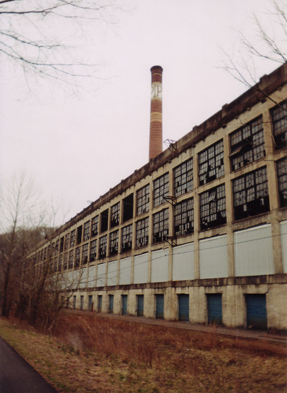
The Peters Cartridge Company building is one of the largest and most imposing abandoned structures in the whole state. Calling it abandoned is a bit misleading, however; portions of the complex have been renovated, and other parts are in the process of being renovated. An artist kept his design offices in the back and there are junk dealers who store things there. It's not a safe place to be, since it's under constant surveillance of the kind that will catch you damn near guaranteed.
Want to film your own paranormal experiences? The get top of the line camera
supplies! At Click Inks you can find all of your surveillance
supply needs? Need to find Security
Video Cameras or a high quality Surveillance
Camera System? For all your Surveillance
Camera needs, visit Surveillance Video! Visit today and add better
protection to your home or workspace immediately.
Another chapter in the building's story: RJ Bond of Criterion Technologies rented the place to make a new horror movie, entitled first The Factory and now Ghost Factory, in December of 2002. The movie renames the place the Petrie Munitions Factory, and tells the story of a reality TV show--Terror TV--which films at the abandoned plant, only to discover real ghosts running around. During the filming several crew members had encounters with the real Peters plant ghosts, including one woman who heard someone whispering to her in a part of the building where no one was supposed to be. RJ Bond allowed me to visit the set and watch them filming, which was extremely cool, and even let me share the fantastic chicken a la king from the craft services table. Keep your eyes open for The Factory in the near future.
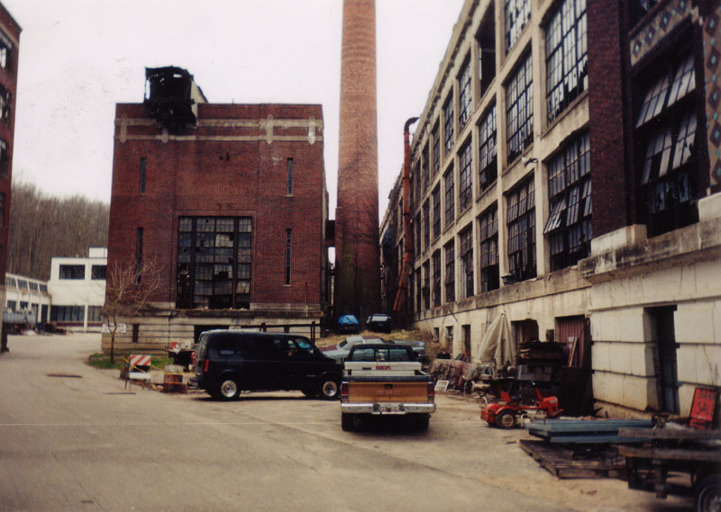
All of which brings me to the next point: this is a seriously dangerous place to explore, both because there are holes in the floors and open elevator shafts everywhere, and because the Hamilton Township Police Department spends a significant amount of time watching and staking out the place. They use the upper floors of the building for SWAT team training, and respond to a steady stream of complaints from the property's managers and tenants.
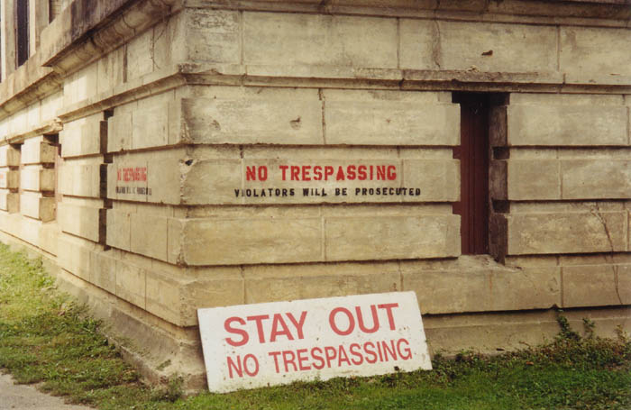
I have spoken to several people who were caught breaking into the Peters building and ended up being prosecuted for criminal trespassing. I also spoke to a local police officer who tells me that they have standing orders from the building's owners to prosecute anyone caught there.
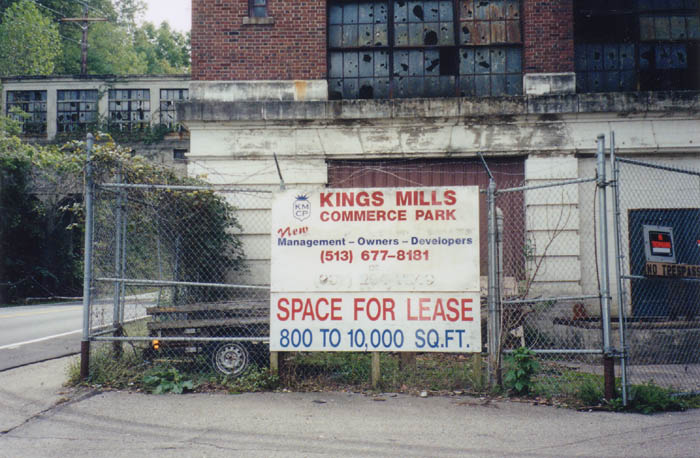
The latest news about the Peters building is that it might be turned into a very big studio apartment complex. In the meantime it's mostly unused. The Little Miami Scenic Bike Trail begins here and runs right beside the plant, so if you visit you're likely to see a lot of people around. From what I'm told, the police are keeping close watch on the property because of a recent increase in cult-type activity there. And there are dozens of cats who currently occupy the building.
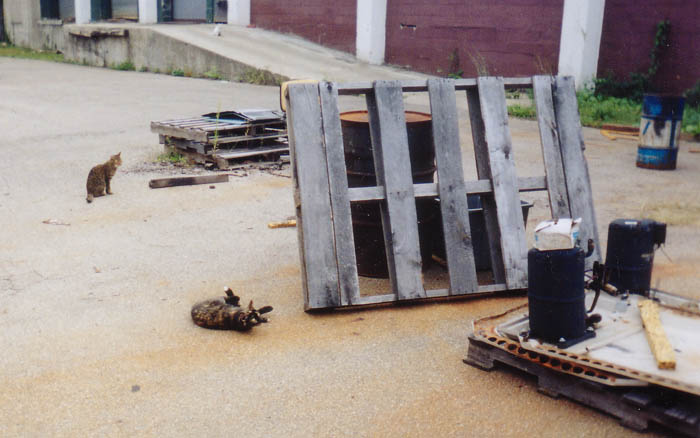
My first visit to the Peters Cartridge Co. building was on Easter Sunday 2002 with my friend Rookie from Illicit Ohio. That trip didn't yield much more than a good look at the outside of the place. But a return trip in the early fall of 2002 went much better. Many of the pictures you see in this section are courtesy of Katydid, who went with me.
Choose a section below to explore the Peters Cartridge Company complex.
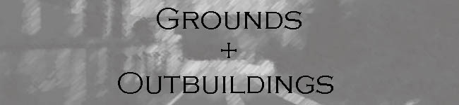
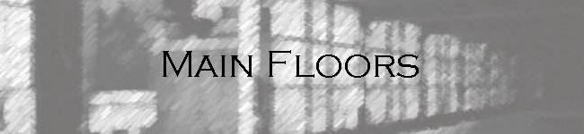
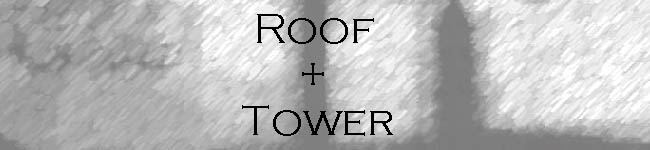
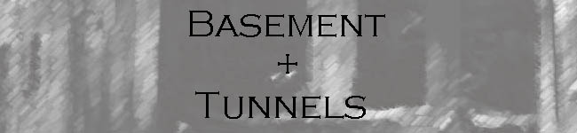
"Peters Factory a Giant in Ruins" - Cincinnati Enquirer article
Back